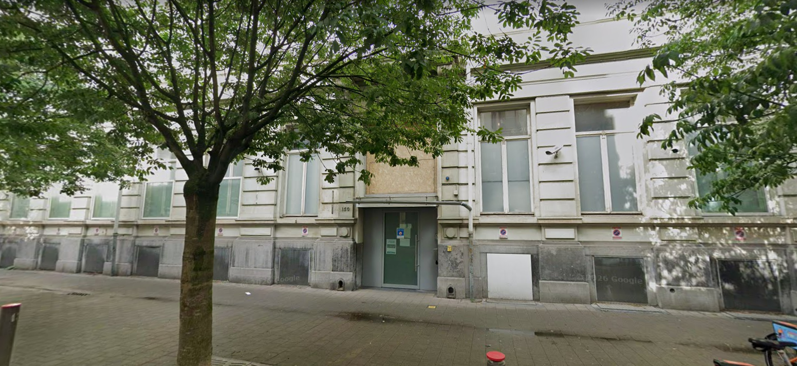

Histoire
L'école Yavné a été créée après la Seconde Guerre mondiale pour répondre aux besoins des familles orthodoxes sionistes d'Anvers. Fondée sur les principes de la Torah u-Madda (intégration de l'étude de la Torah et des connaissances profanes), Yavné proposait un parcours éducatif combinant des études hébraïques et religieuses intensives avec les sciences modernes, les langues et les humanités, préparant les étudiants à devenir des citoyens actifs de la communauté juive et de la société belge.
Reconstruction
La fondation de Yavné a représenté une étape importante dans la reconstruction de l'Anvers juif de l'après-guerre. Après les destructions de la Shoah, l'établissement de cette nouvelle école témoignait de la résilience des survivants et de leur détermination à bâtir un avenir dynamique. Yavné offrait un cadre accueillant aux familles désireuses de renouer avec leur héritage tout en se tournant vers les opportunités modernes.
Aujourd'hui
Aujourd'hui, Yavné est une école hautement respectée et subventionnée par l'État, s'adressant à la communauté orthodoxe moderne. Elle propose des classes de la maternelle au secondaire, maintenant un engagement fort envers l'excellence académique, les valeurs juives et une relation étroite avec l'État d'Israël. Elle continue de jouer un rôle essentiel dans le réseau éducatif actif d'Anvers.
Archives communautaires
